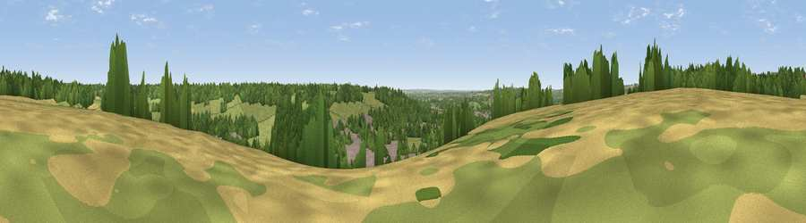

Viewpoint near Wooburn Green
#39725 in England · top 36% of its area beats it · near Wooburn GreenWhere it is
The exact computed spot (SU 90525 88325). Click the marker for map links.
The view, rendered

A 360° render of this exact spot computed from the terrain model, tree cover and land cover — summer colours, afternoon light, calibrated against photographs of famous viewpoints. Real trees, hedges and buildings will differ in detail.
The panorama
Grey silhouette: terrain skyline in each direction (720 bearings, Earth curvature and refraction included). Dashed green: skyline with trees (+15 m) and buildings (+8 m) as obstacles. Blue strip: how far the ground is visible on each bearing.
Where the view opens
Wedge length = distance to the farthest visible ground on that bearing (vegetation-aware). Rings at 10, 25 and 50 km.
What fills the view
42% woodland · 39% grassland · 10% built-up · 9% cropland
Angular shares of the visible panorama (visual magnitude), not map area. Landscape diversity 0.52 (0–1 Shannon).
Key numbers
More beautiful places nearby
The staircase of upgrades: each row has a higher view potential than everything closer. Driving times are estimates from straight-line distance, calibrated against real road routing — check an actual route before setting out.
| Place | Direction | Drive | Score |
|---|---|---|---|
| Viewpoint near Hedsor | S · 2 km | ~5 min | 31.3 |
| Viewpoint near Loudwater | N · 3 km | ~8 min | 33.8 |
| Fultness Wood Hill | SW · 6 km | ~13 min | 39.0 |
| Windsor Castle | SSE · 13 km | ~24 min | 39.8 |
| Viewpoint near Fawley | W · 16 km | ~29 min | 48.8 |
| Viewpoint near Whiteleaf | NNW · 17 km | ~30 min | 58.2 |
| Brush Hill | NNW · 17 km | ~30 min | 67.9 |
| Viewpoint near Whiteleaf | NNW · 18 km | ~31 min | 70.1 |
51.58652, -0.69478 · source: screening · position refined by local search. Computed location — check access rights before visiting.